ROMBERG METHOD¶
Metode Romberg adalah metode perhitungan yang didasarkan trapezional rule dan error calcultion sehingga dapat menghasilan nilai integral dengan tingkat presisi yang tinggi. Metode integrasi Romberg didasarkan pada perluasan ekstrapolasi Richardson untuk memperoleh nilai integrasi yang semakin baik.
Metode ini sering digunakan untuk memperbaiki hasil aproksimasi oleh metode selisih terhingga. Metode ini dipakai untuk evaluasi numerik dari integral tentu. Untuk dua interval bagian yang berbeda yang panjangnya h1 dan h2 akan diperoleh aproksimasi nilai-nilai I1 dan I2 . Kemudian diperoleh kekeliruan E1 dan E2.
Algoritma :¶
1) Cari nilai A0,A2…..Ak berdasarkan n, dimana : n=2^k = jumlah interasi, dan dimana k /pias =(0,1,2,3,4,5,6)
2) Tentukan nilai tabel iterasi, dimana :
- r = iterasi ke-
- Xr = h = ( b-a ) / n
- fr = Xr yang telah dimasukan ke dalam fungsi / integral
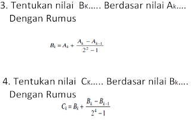
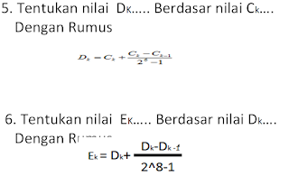
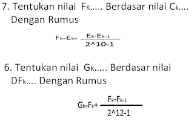
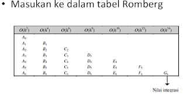
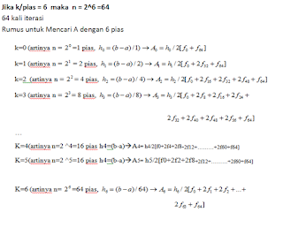
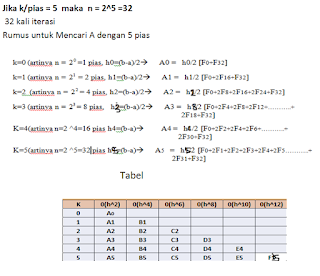
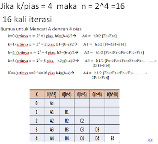
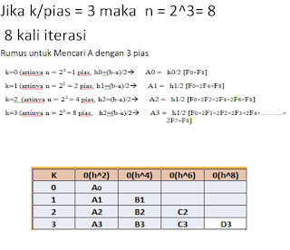
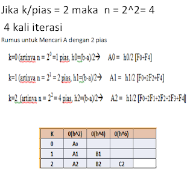
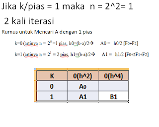
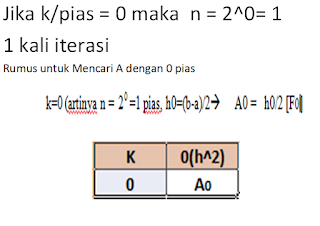
Contoh Soal :¶
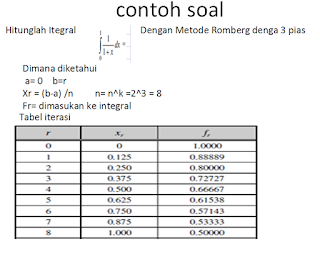
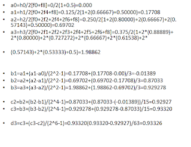
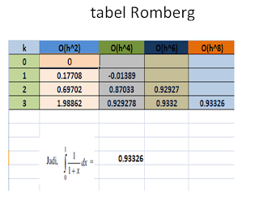
Code Program :¶
# import numpy and scipy.integrate
import numpy as np
from integrate import scipy
gfg = lambda x: np.exp( - x * * 2 ) + 1 / np.sqrt(np.pi)
# using scipy.integrate.romberg()
geek = integrate.romberg(gfg, 1 , 2 , show = True )
print (geek)
Hasil Running :¶
Integrasi Romberg dari <function vectorize1..vfunc at 0x00000209E1605400> dari [1, 2]
Langkah StepSize Hasil
1 1,000000 0,757287
2 0,500000 0,713438 0,698822
4 0.250000 0.702909 0.699400 0.699438
8 0.125000 0.700310 0.699444 0.699447 0.699447
16 0,062500 0,699663 0,699447 0,699447 0,699447 0,699447
32 0.031250 0.699501 0.699447 0.699447 0.699447 0.699447 0.699447
Hasil akhir adalah 0,6994468414978009 setelah 33 evaluasi fungsi